携手 WithYou 使用说明
轻量级桌面任务看板 —— 便签卡片 · 看板视图 · 日历排期 · 桌面常驻
01软件简介
携手 WithYou 是一款类似「小黄条」的轻量桌面任务工具。核心体验是：3 秒内记下一件事，一屏之内看清所有事。 它常驻桌面（可最小化到系统托盘），把任务以「便签卡片」的形式按状态铺在看板上， 同时提供日历排期、提醒通知和一只会陪你工作的桌面宠物。
- 够快：用全局速记输入标题、回车即建；也可用全局热键 Ctrl + Alt + N 随时速记。
- 够清楚：统一任务列表，通过「全部 / 待完成 / 已完成 / 已取消」标签筛选，颜色、截止时间、逾期、子任务进度一目了然。
- 不丢数据：每次修改即时保存到本地（原子写入），删除默认进入 5 秒「可撤销」流程。
- 轻量无负担：普通任务管理在本机运行，导出的 JSON 可直接备份迁移；仅使用 AI 整理时，将本次输入发送到你配置的模型服务。
02界面总览
顶部可切换任务列表、日历计划和项目资料；主体为统一任务列表，通过状态标签筛选。
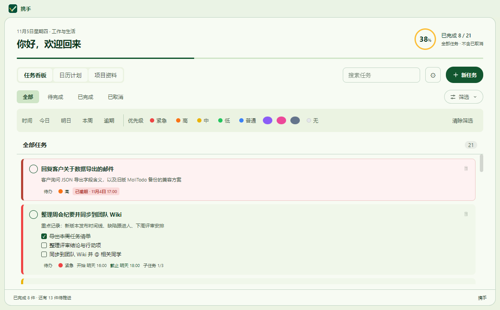
| 区域 | 说明 |
|---|---|
| 快速新建输入框 | 输入任务标题并回车，立即创建任务（见 03） |
| 「新任务」 | 默认 AI 输入；切换手动填写可设置任务内容、起止时间、紧急程度、重复规则（见 04） |
| 看板 / 日历 | 一键切换看板视图与日历视图（见 07、08） |
| 搜索框 | 按标题、备注、子任务内容实时过滤（见 09） |
| ⚙ 设置 | 分类设置：通用与外观、AI 与模型、优先级、桌宠、数据备份（见 12） |
| 筛选栏 | 按截止时间（全部 / 今日 / 本周 / 逾期）与颜色（紧急度）筛选 |
| 统一任务列表 | 全部 / 待完成 / 已完成 / 已取消；同一列表按状态筛选 |
03快速新建任务
最快的记事方式：只写标题，回车即建。适合「先把脑子里的事丢下来」。
- 按 Ctrl + Alt + N 唤起速记小窗，输入标题并按回车即可创建。
- 也可以点击主窗口「新任务 → 手动填写」，只填任务名后点击「创建」。
- 在「全部」或「待完成」标签中查看新任务；需要批量拆解一段话时，使用 AI 整理。
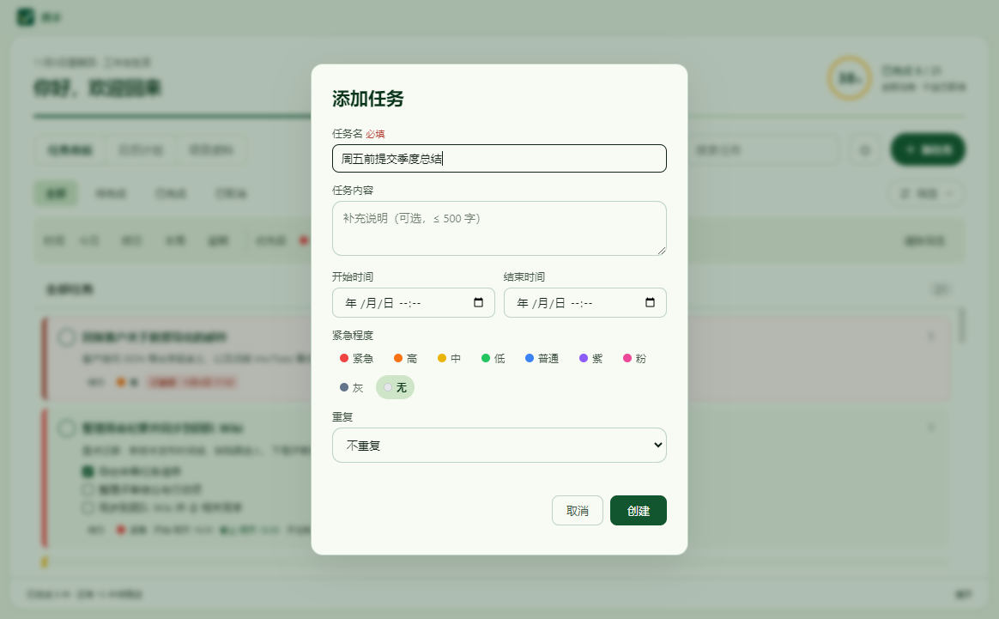
04完整添加与重复任务
点击「新任务」后默认进入 AI 输入。需要手动添加或创建重复任务时，先切换「手动填写」，再填写任务信息；AI 整理见 第 18 节。
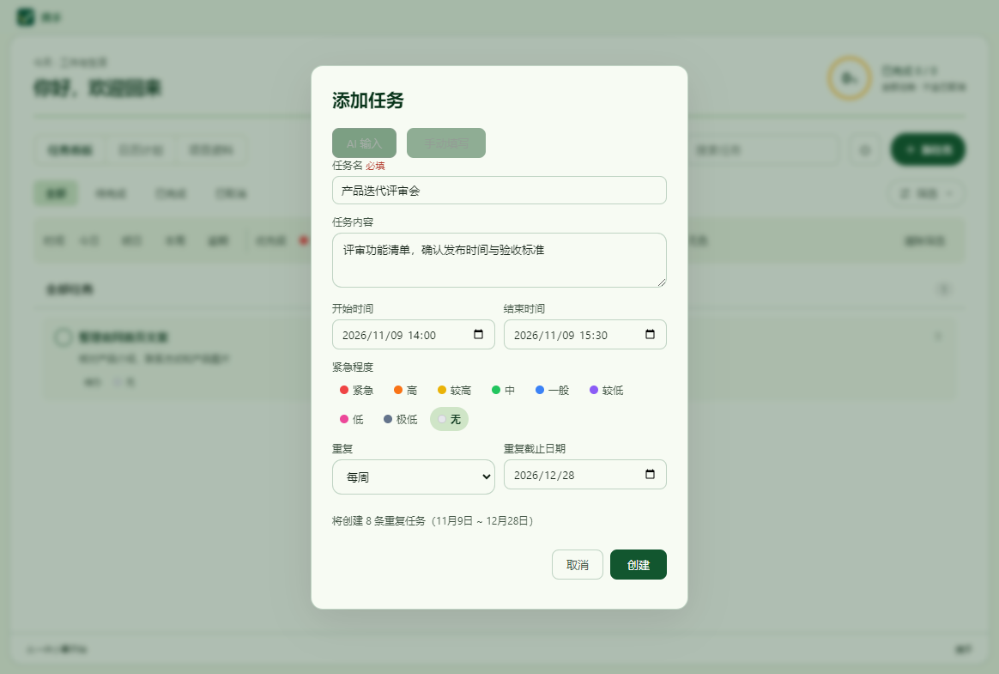
| 字段 | 说明 |
|---|---|
| 任务名 | 必填，当前手动新建表单最多 100 字；AI 草稿标题最多 200 字 |
| 任务内容 | 当前手动新建表单最多 500 字；任务数据层备注上限 1000 字 |
| 开始时间 / 截止时间 | 精确到分钟。优先在开始前提醒，仅填写截止时间时在截止前提醒。 |
| 提醒时间 | 可选提前 5、10 或 30 分钟，默认提前 5 分钟。 |
| 紧急程度 | 默认 4 级（紧急 / 高 / 普通 / 低）+ 无色；旧版 9 级配置会保留。等级名称可在设置中自定义（见 12） |
| 重复 | 不重复 / 每天 / 每周 / 每月；选择后需填写「重复截止日期」 |
重复任务的创建预览
选择重复频率后，表单下方会实时显示「将创建 N 条重复任务（起始日 ~ 结束日）」，确认无误再点「创建」。 例如图 3 中的「产品迭代评审会」，每周 14:00–15:30、持续约八周，一次生成 8 条独立任务。
05编辑任务与子任务
双击卡片即可就地编辑，不需要跳转页面。
- 双击任务卡片的标题区域，卡片展开为编辑表单。
- 可修改：标题、备注、开始 / 结束时间、颜色（紧急程度）。
- 按 Enter 或点「保存」提交；按 Esc 或点「取消」放弃修改；点「删除」移除任务。
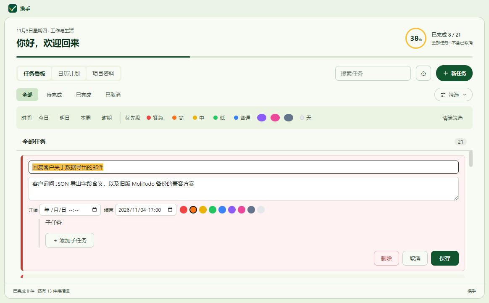
子任务清单
- 在卡片的「添加子任务，回车确认」处输入内容，回车即添加，可连续添加多条。
- 点击子任务前的方框切换完成状态；点击行尾按钮删除单条子任务。
- 卡片底部显示进度徽标，如「子任务 2/4」。
- 上限：每个任务 50 条子任务，每条不超过 200 字。
06完成、删除与撤销
标记完成
点击卡片左上角的勾选圈切换完成状态。点击「已完成」标签查看已完成任务，再次点击勾选圈可恢复为待办。「待完成」包含待办和进行中的任务。
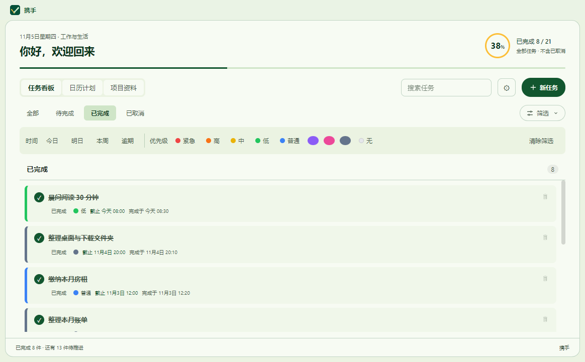
删除与撤销
- 点击卡片右上角的 🗑 按钮（或编辑表单中的「删除」）删除任务。
- 底部弹出 Toast「已删除「xxx」」，5 秒内点击「撤销」。
- 任务会恢复到删除前的位置；超过 5 秒则删除不可恢复。
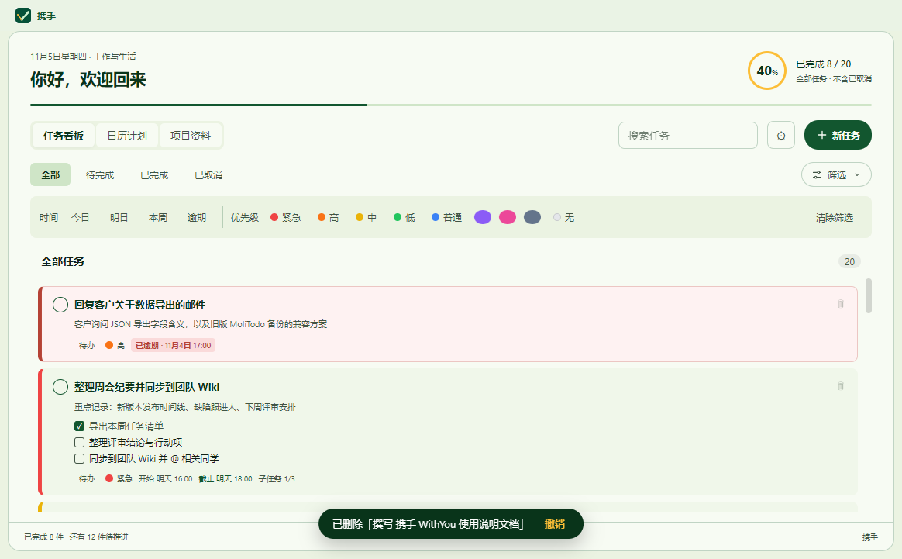
07看板视图
任务列表采用统一列表，使用「全部 / 待完成 / 已完成 / 已取消」四个标签筛选状态（见图 1）。顶部完成率按全部非取消任务计算，不随筛选变化。
卡片信息
- 颜色条 / 优先级：卡片左侧色条与徽标显示紧急程度（如「紧急」「高」「中」）。
- 开始 / 截止时间：显示为「开始 10月30日 16:00」「截止 10月30日 18:00」。
- 逾期标识：超过截止时间未完成的卡片整体变红并置顶，徽标显示「已逾期 · …」。
- 备注摘要：两行截断展示；子任务进度：如「子任务 2/4」。
拖拽
- 同状态任务拖拽：调整任务先后顺序。
- 拖到其他状态卡片上：可切换任务状态；界面不再按状态分栏。
08日历视图
点击工具栏「日历」切换到月视图，按日期查看与安排任务。
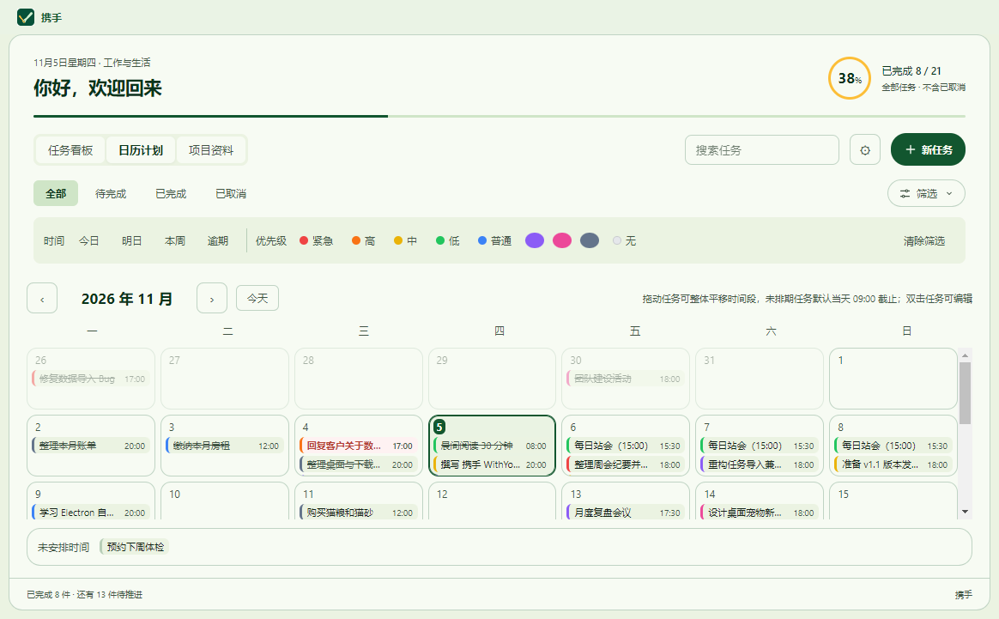
- 月份导航：‹ › 切换月份，「今天」按钮快速回到当月今天。
- 每日格子：显示当天截止的任务条目，含颜色条与时间；逾期红显、完成划线，超过 4 条可点「展开」。
- 拖拽排期：把底部「未安排时间」的任务拖到某个日期，会先询问当天截止时间（默认 18:00）。拖动已排期任务时，按拖起日期到落点日期的偏移，整体平移开始和截止时间，保持任务时长；只设置一个时间的任务仅移动该时间，拖回原日期则不变更。
- 双击跳转：双击日历中的任务条目，自动跳回看板并打开该任务的编辑表单。
09搜索与筛选
任务多了以后，用搜索与筛选快速定位。搜索和筛选可以叠加使用。
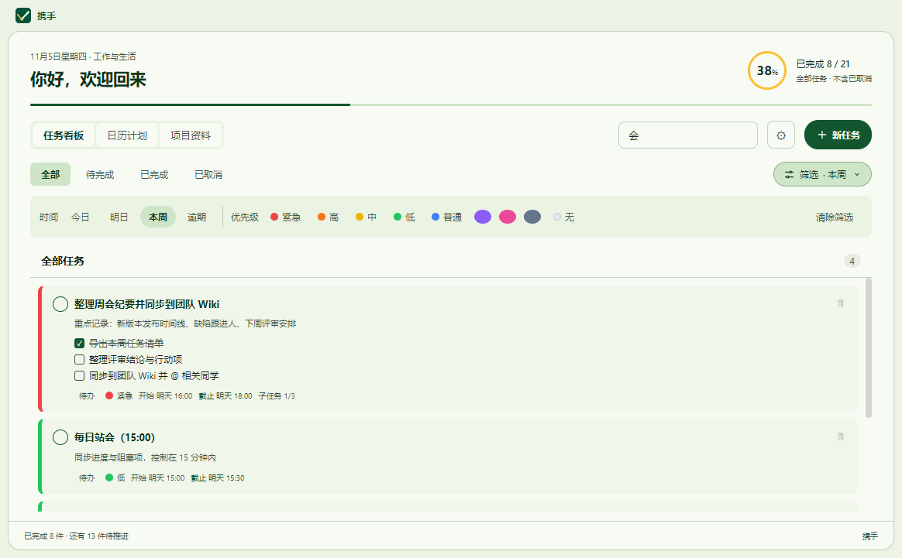
| 方式 | 说明 |
|---|---|
| 关键词搜索 | 实时过滤，匹配范围包含标题、备注、子任务内容 |
| 时间筛选 | 全部 / 今日 / 本周 / 逾期（逾期 = 已过截止时间且未完成） |
| 颜色筛选 | 点色块只看某个紧急度的任务，再点一次取消；「无」= 未标色 |
10时间与提醒
给任务加上截止时间后，携手 WithYou 会替你盯着它。
- 开始与截止时间：精确到分钟。提醒可选提前 5、10 或 30 分钟，优先按开始时间计算，仅填写截止时间时按截止时间计算。
- 系统通知：到达提醒时间后弹出 Windows 系统通知（后台约每 15 秒检查一次），点击通知可直接聚焦主窗口。可在「桌面宠物」设置中单独关闭系统通知、气泡或居中动画，或打开「安静模式」全部关闭。
- 提醒去重：每条任务只提醒一次。实际提醒时间改变后可再次提醒。
- 逾期高亮：逾期卡片变红并置顶到列表前部，日历中同步红显。
11速记小窗
在任何界面、任何时刻，按 Ctrl + Alt + N 唤起速记小窗，先记下来再说。
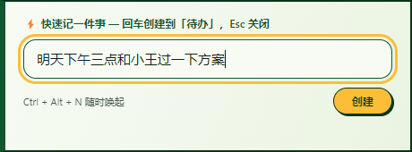
- 按 Ctrl + Alt + N（或托盘菜单「快速新建」）唤起小窗。
- 输入任务标题，按 Enter 创建并清空，可连续速记。
- 按 Esc 或点击其他地方（失焦）自动收起小窗。
12桌面与窗口设置
点击工具栏 ⚙ 打开设置面板，把携手 WithYou 调成你喜欢的桌面形态。
设置左侧分为「通用与外观」「AI 与模型」「颜色与优先级」「桌面宠物」「数据与备份」。点击分类后在右侧操作，底部「关闭」关闭设置。通用选项即时保存；供应商配置需要点击「保存连接设置」。界面语言可切换简体中文或 English，不会翻译已有任务原文。
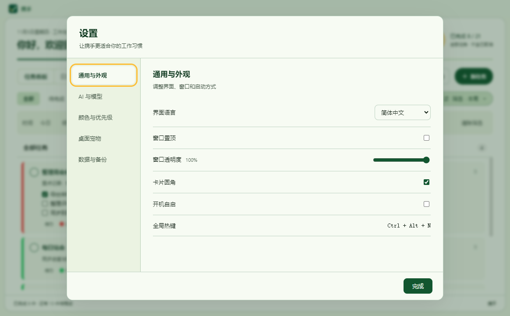
| 设置项 | 说明 |
|---|---|
| 窗口置顶 | 主窗口始终浮在其他窗口之上 |
| 阅读字号 | 标准 / 较大 / 大；整个界面同步缩放 |
| 界面主题 | 跟随系统 / 浅色 / 深色 |
| 减少动态效果 | 关闭卡片、弹窗和桌宠的过渡动画 |
| 窗口透明度 | 50% ~ 100%，做「贴在桌面上的便签」效果 |
| 卡片圆角 | 关闭后卡片变为直角风格 |
| 开机自启 | 开机自动启动（默认关闭） |
| 全局热键 | 显示当前速记热键：Ctrl + Alt + N |
| 颜色与优先级 | 默认 4 级（紧急 / 高 / 普通 / 低）+ 无色；旧版 9 级配置原样保留。可用 ▲▼ 调整等级顺序（上高下低），并自定义名称；名称留空则不显示标签 |
| 桌面宠物 | 显示开关、大小 80%~150%、系统通知、气泡提醒、居中提醒动画、安静模式、贴边吸附（见 13） |
| 数据管理 | 完整备份 / 导出 JSON / 导入（见 14） |
系统托盘
- 点击窗口关闭按钮 不会退出，而是最小化到系统托盘，继续在后台提供提醒。
- 双击托盘图标打开主窗口；右键托盘图标可：快速新建 / 打开 / 开机自启 / 退出。
- 只有托盘菜单中的「退出」才会真正结束程序。
13桌面宠物
一只常驻桌面右下角的橘猫：既能陪工作，也会替你盯任务。
到期提醒分成三层：Windows 系统通知、桌宠气泡、居中提醒动画，可分别开关；打开「安静模式」会同时关闭这三层。动作预览和居中动画预览收在「预览与动作库」折叠区。
基础互动
- 单击：抚摸，出现爱心特效并提升心情。
- 双击：喂食，出现 🍰 与咀嚼动画；喂食有 4 小时冷却。
- 右键：弹出菜单（打开主窗 / 速记 / 喂食 / 设置 / 隐藏桌宠）。
- 贴边躲藏：按住移动位置（拖动小于 5 像素视为点击）。贴近屏幕边缘 12 像素内松手，猫会躲入对应侧的左下 / 右下桌角，只探出头；鼠标悬停猫头时跑出来坐下，移开约 1.2 秒后再次躲藏。关闭「贴边吸附」可取消此行为；重启后记住桌角位置。
任务联动与轻养成
- 新建 / 完成任务时气泡反馈（完成会触发庆祝动画）；任务到期、逾期时气泡提醒。
- 有逾期任务时猫的心情会变差；闲置太久心情也会慢慢下降。
- 心情 0~100、经验、等级（每级所需经验递增 100）；23:00–7:00 会睡觉，点击可唤醒 5 分钟。
14数据管理
所有数据都保存在本地，随时可备份、迁移。
自动保存
每一次新增、修改、删除都会立即写入磁盘（先写临时文件再原子重命名）， 断电或崩溃也不会产生损坏的数据文件。
完整备份 / 导出 / 导入
- 完整备份：包含任务、项目资料和非敏感设置（语言、主题、字号、减少动效、优先级、桌宠开关等），不包含供应商密钥。导入前会显示任务和资料数量；重复资料会跳过，任务按合并追加处理。
- 导出 JSON：只导出任务与 AI 来源记录，适合分享或轻量备份；不包含项目资料和设置。
- 导入 JSON：采用合并追加策略 —— 保留现有任务，只把文件中的任务加进来；id 冲突会自动重新生成，不会覆盖你的数据。
- 导入兼容三种格式：本应用导出格式、裸任务数组、旧版 MoliTodo v3 备份格式（自动映射 content / metadata.note / metadata.steps / scheduledStartAt/EndAt）。
数据存储位置
| 内容 | 位置 |
|---|---|
| 任务数据 | %APPDATA%\WithYou\tasks.json |
| 设置 | %APPDATA%\WithYou\settings.json |
| 桌宠状态 | %APPDATA%\WithYou\pet.json |
| 供应商、模型及加密密钥 | %APPDATA%\WithYou\ai-config.json |
| 项目资料路径 | %APPDATA%\WithYou\project-resources.json |
| AI 待确认草稿 | %APPDATA%\WithYou\ai-drafts.json |
| 导入前恢复副本 | %APPDATA%\WithYou\before-import.json |
tasks.json 和 project-resources.json 复制到网盘或移动硬盘；换机迁移优先使用「完整备份」。15快捷键速查
| 快捷键 / 手势 | 作用 |
|---|---|
| Ctrl + Alt + N | 唤起速记小窗（可在托盘菜单中触发同样功能） |
| Enter | 速记 / 快速新建输入框中：创建任务；编辑表单中：保存 |
| Esc | 关闭速记小窗 / 弹窗 / 取消编辑 |
| 双击卡片 | 就地编辑任务 |
| 双击日历条目 | 跳回看板并打开编辑 |
| 拖拽卡片 | 同状态排序；拖到其他状态卡片上可切换状态 |
| 拖拽日历条目 | 整体平移任务时间段；未排期任务拖入日期时询问当天截止时间 |
| 单击 / 双击桌宠 | 抚摸 / 喂食 |
16常见问题
关掉窗口后程序退出了吗？
数据保存在哪里？换电脑怎么迁移？
%APPDATA%\WithYou\ 下的三个 JSON 文件（见 14）。
换电脑时复制整个文件夹，或使用「导出 JSON / 导入 JSON」功能。误删任务还能找回吗？
没有收到到期提醒通知？
怎么把任务变成每天 / 每周重复？
桌面宠物不见了怎么办？
导入会覆盖我现在的任务吗？
17功能清单
对照需求文档（PRD）的实现一览。
| 优先级 | 编号 | 功能 | 使用入口 |
|---|---|---|---|
| P0 | F-101 | 快速新建 | 全局速记输入标题后回车；新任务可切换手动填写 |
| P0 | F-102 | 编辑任务 | 双击卡片就地编辑 |
| P0 | F-103 | 完成切换 | 勾选圈；完成后可在「已完成」标签查看 |
| P0 | F-104 | 删除撤销 | 🗑 删除后 5 秒 Toast 撤销 |
| P0 | F-105 | 拖拽排序 | 同状态排序／拖到其他状态卡片切换状态 |
| P0 | F-106 | 完整添加 | 「新任务」表单 |
| P0 | F-107 | 重复任务 | 每天 / 每周 / 每月 + 截止日期 |
| P0 | F-108 | 子任务 | 卡片内清单：勾选 / 删除 / 连续添加 |
| P0 | F-201~203 | 统一任务列表与卡片信息 | 看板视图 |
| P0 | F-301~302 | 颜色标记与备注 | 编辑表单 / 添加表单 |
| P0 | F-401~403 | 本地保存与导入导出 | 自动；设置面板 |
| P0 | F-501~503 | 截止时间、通知、逾期高亮 | 编辑表单；系统通知 |
| P1 | F-601~602 | 速记小窗与托盘常驻 | Ctrl + Alt + N；托盘菜单 |
| P1 | F-701~702 | 搜索与筛选 | 搜索框；筛选栏 |
| P1 | F-801~803 | 置顶、透明度、自启 | 设置面板 |
| P1 | F-901~906 | 桌面宠物 | 透明小窗；设置面板 |
| 扩展 | — | 日历视图与拖拽排期 | 「日历」切换 |
18AI 整理与确认创建
把工作描述或会议纪要变成任务草稿：粘贴 → AI 整理 → 检查并勾选 → 确认创建。无需选择整理模式。
- 先按 第 19 节 配置至少一个供应商和模型。
- 点击「新任务」，在「AI 输入」里粘贴内容，最多 30000 字。「模型选择」默认折叠，展开后可选择供应商和已配置模型。
- 点击「AI 整理」，或按 Ctrl + Enter。普通回车只换行。整理期间可取消，失败后输入仍保留。
- AI 自动识别工作描述、会议纪要或混合内容。会议中的讨论、否决、暂不执行事项不会作为明确行动项；补充步骤会标记为建议。
- 整理完成自动弹出预览，此时没有创建任务。核对后点击「确认并创建任务」才批量保存；关闭预览不会创建。
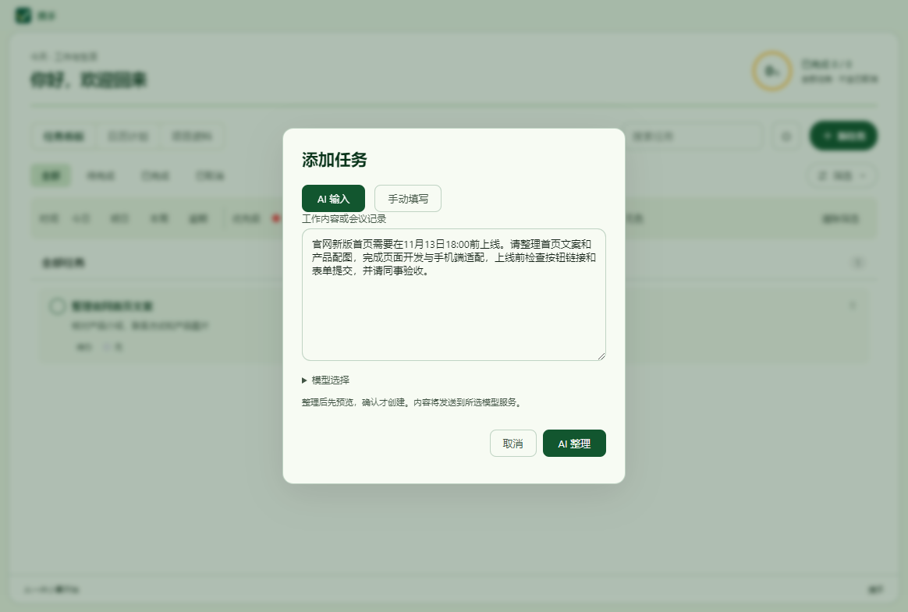
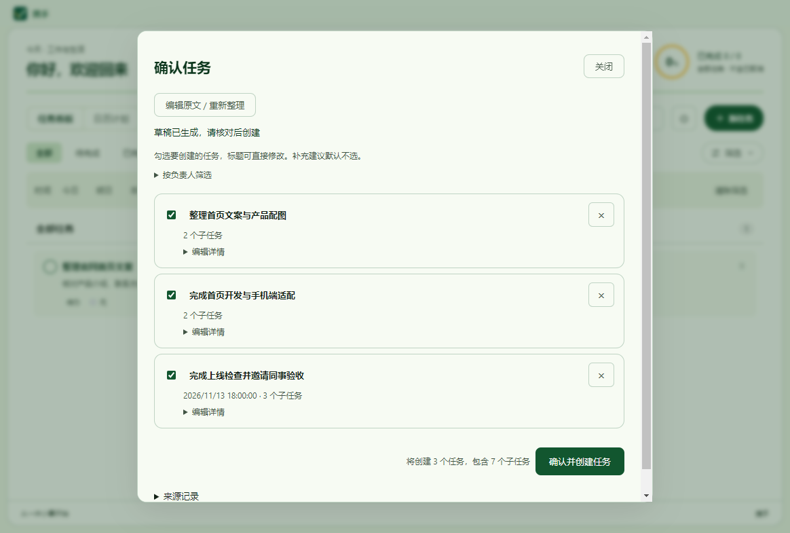
预览怎么用？
- 勾选框：只创建勾选且当前范围内可见的任务；AI 补充建议默认不选，可核实后选中。
- 标题：直接点击输入框修改；右侧 × 仅从当前草稿移除该任务。
- 摘要与提醒：显示负责人、截止时间、子任务数量。待确认内容和补充建议直接显示，请特别核实日期、归属和执行范围。
- 编辑详情：展开修改备注、负责人、依赖、开始／截止时间、子任务及待确认事项，并查看对应原文。每个任务最多 50 条子任务，每条最多 200 字。
- 按负责人筛选：展开后填写自己的姓名，切换「只看我的任务」；按负责人精确匹配，未指定负责人时请在「全部行动项」中查看。
- 会议结论与讨论：有相关内容时可展开查看；「编辑原文 / 重新整理」用于补充输入后重新生成。
- 保存与撤销：一次最多创建 50 个任务，负责人和依赖写入备注。成功后可「撤销刚才整批任务」；确认撤销会删除该批全部任务，包括之后的编辑。
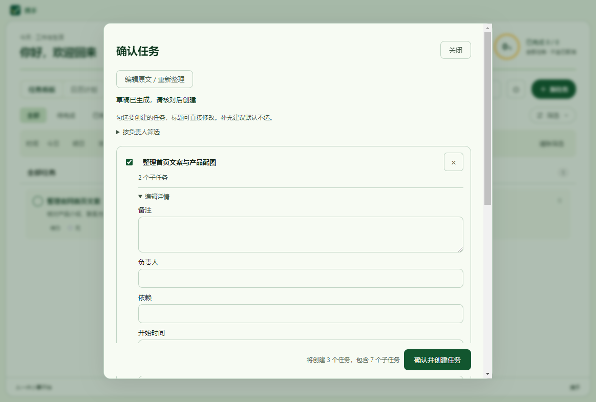
任务卡片的「查看原文」和预览中的「来源记录」可回看完整来源。来源随任务 JSON 备份导出、导入并在重启后保留。
19供应商与模型配置
打开「设置 → AI 与模型」。每个供应商独立配置接口、协议、密钥和多个模型，使用时可切换。
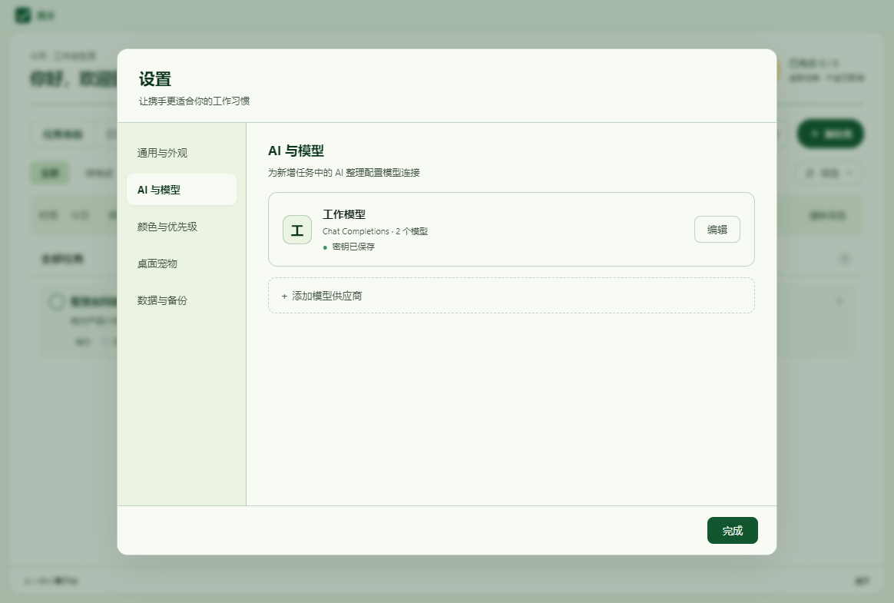
- 点击「＋ 添加模型供应商」，填写供应商名称和个人 API Key。编辑已有供应商时，Key 留空会保留其已保存密钥；勾选「清除已保存密钥」后保存可删除该密钥。
- 展开「自定义设置」，选择 API 格式，填写服务商提供的基础地址或完整接口地址。基础地址通常包含
/v1；仅填域名时程序默认补/v1。 - 在「手动添加模型」中填写模型 ID 并点击「添加模型」；或点击「检测并获取模型」，搜索、勾选后点击「添加所选模型」。检测使用当前表单的地址和 Key，Key 留空时使用该供应商保存的密钥。
- 模型目录只维护该供应商可用的模型；默认模型在页面顶部「全局默认模型」统一选择，修改后立即保存。
- 点击「测试默认模型连接」会用固定样例实际请求一次默认模型，只显示本次结果，不会发送现有任务。
- 点击「保存连接设置」生效并收起编辑器。「取消」放弃草稿。再次点击卡片「编辑」可以调整；删除供应商需要确认，不会删除已有任务。
| API 格式 | 请求接口 | 适用情况 |
|---|---|---|
| OpenAI 兼容（Chat Completions） | /chat/completions | 使用该协议的服务；保持原有默认选项 |
| OpenAI 兼容（Responses） | /responses | 服务明确提供 Responses 接口时选择 |
| Anthropic 兼容（Messages） | /messages | 服务明确提供 Anthropic Messages 接口时选择 |
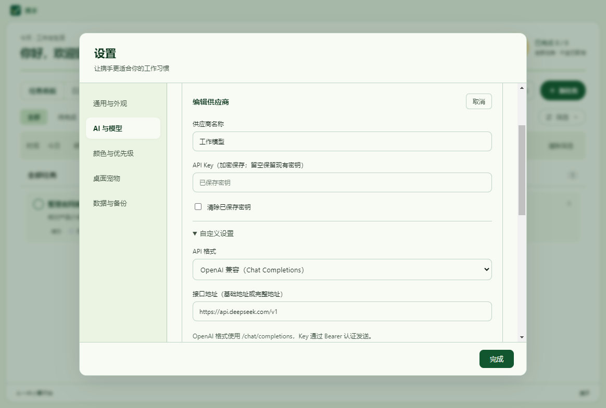
三种格式的认证和响应结构不同，请按服务商说明选择，不能仅改接口名称。模型检测查询同一地址前缀下的 /models，返回列表并不保证所有模型都支持任务整理或账户有调用额度。不支持列表的服务可直接手动添加模型 ID。
| 遇到的问题 | 处理方法 |
|---|---|
| Key 无效／无权限 | 核对当前供应商的 Key、模型权限和账户额度；不要混用其他供应商的密钥。 |
| 没有模型列表／404 | 核对基础地址；服务可能没有模型列表接口，按服务商提供的 ID 手动添加。 |
| 超时／网络错误 | 检查网络和服务状态后重试。原文会保留，普通任务管理仍可使用。 |
| 未返回完整 JSON | 检查协议和模型兼容性，缩短输入或更换模型；失败时不会创建任务。 |
旧单模型配置会自动迁移。密钥通过本机系统凭据加密，不会回填到输入框，也不包含在任务 JSON 导出文件中。
20项目资料与版本升级
项目资料
切换顶部「项目资料」，点击「添加资料」，填写项目名称、资料名称、路径或链接和备注。可选择本机路径；保存后可打开、在文件夹中显示、复制路径或链接、编辑或删除记录。路径失效时会提示「路径不存在或已移动」，可重新定位；链接和本机路径会显示不同的操作。该入口保存的是路径／链接，不会自动读取文件内容或将资料作为 AI 知识库。
升级到 1.2.0
在原电脑、原用户下升级，会继续读取 %APPDATA%\WithYou 中的任务和设置。安装包包含功能与界面，不包含个人任务、供应商 Key 或偏好设置。换电脑安装时需要重新配置供应商和密钥。
任务导出包含 AI 来源记录，但不包含供应商密钥、外观偏好、桌宠状态或项目资料配置。迁移或换机时使用「设置 → 数据与备份 → 完整备份」，它会包含任务、资料和非敏感设置，但不包含供应商密钥；「导出 JSON」仍只导出任务与来源记录。请勿将含个人配置信息的目录作为安装包分发。